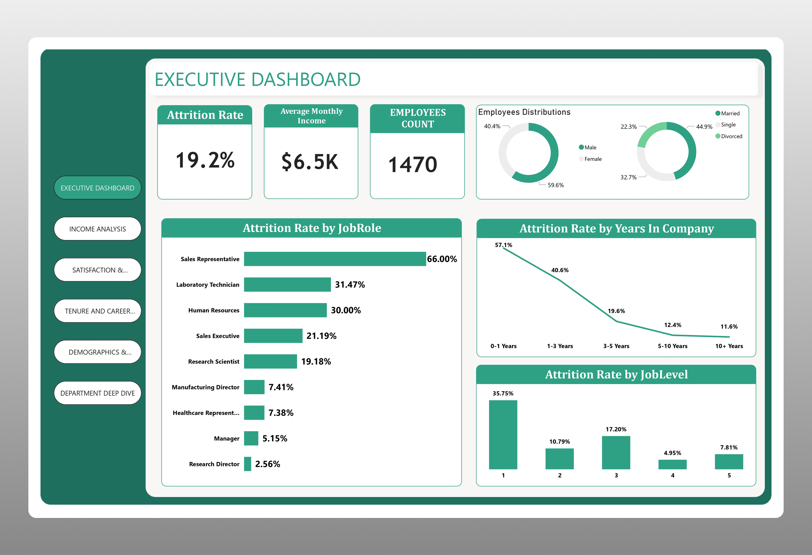

I turn messy data into dashboards and automations people use.
Data analyst, Power BI developer and automation specialist. Three years of cleaning data, building reports and removing manual work, including on large healthcare datasets.


HR Attrition & Analytics
Click any chart, slicer or card to cross-filter the report in real time.
About me
I am a statistics graduate who likes turning raw numbers into something a decision-maker can read in a minute. I validate data carefully, build clear Power BI reports with DAX, and automate repetitive work with Google Apps Script. I explain findings in plain language, so the people who act on them understand them.
HR Attrition Analysis — Executive Summary & Findings
An executive synthesis of insights from analyzing IBM's 1,470-employee workforce dataset. While you can interact with the live report above, this section outlines the critical turnover drivers, visual evidence across report pages, and high-impact retention recommendations for HR leadership.
First-year employees leave at over twice the rate
57.1% of employees who quit do so within their first year — compared to just 11.6% for those who have been at the company for over 10 years. Onboarding quality and early role clarity are the clearest levers to pull.
Longer commutes consistently drive higher turnover
Attrition rises steadily with commute distance. Employees travelling over 20 km daily exit at significantly higher rates than those within 5 km. Hybrid or flexible location policies are the most immediate countermeasure.
Young talent is the most at-risk group
The 18–25 age band records the highest attrition at 55.7%, falling with each successive band. Without visible career progression paths and salary parity, early-career hires disengage and exit quickly.
Three retention levers with the highest ROI
1. Structured 30/60/90-day check-ins to identify disengagement before the 12-month
cliff.
2. Hybrid or remote options for employees commuting 15+ km, where flexibility directly
lowers exit risk.
3. Junior career pathways — defined promotion timelines and mentorship for the
18–25 cohort.
Report Page Snapshots & Visual Evidence
Static reference views from the 4-page Power BI dashboard built with DAX measures and calculated columns.

Executive dashboard: overall attrition rate, average income and headcount, with attrition by job role, years at the company and job level.
Invoicing, inventory and sales automation
A Google Apps Script system that generates invoices, tracks stock and produces sales reports, so none of it is typed by hand.
- Creates invoices automatically from sales entries.
- Updates inventory as items sell, and rolls sales into reports.
- Handles quantity corrections after an invoice is already generated, a case most simple systems miss.
- For clients, I map the current workflow, find the bottleneck, build the automation and hand over a written implementation guide.
Experience
Data Analyst Intern (SIWES)
Healthcare organisation
- Ran validation and quality checks on large healthcare datasets, finding and fixing inconsistencies while keeping accuracy above 95%.
- Analysed enrolment patterns and financial data to support decisions.
- Wrote clear reports for non-technical stakeholders.
Automation Specialist
Freelance
- Evaluate client workflows, find bottlenecks and design automations that cut manual work.
- Write documentation and implementation guides, and manage projects independently.
Freelance Data Analyst
Self-employed
- Cleaned and prepared analysis-ready datasets for clients.
- Analysed customer purchase data to find buying patterns that support business decisions.
Social Media Advisor
Social media brand
- Reviewed content quality and messaging, and gave structured feedback to improve performance and brand consistency.
Skills and education
Analytics and BI
Power BI, DAX measures and calculated columns, dashboard design, KPI reporting, statistical analysis.
Data management
MySQL, data cleaning and validation, quality assurance, data documentation.
Automation
Google Apps Script, workflow automation, process analysis, implementation guides.
Education
B.Tech in Statistics. Certificate in Data Science (2026). MySQL Bootcamp (2025).